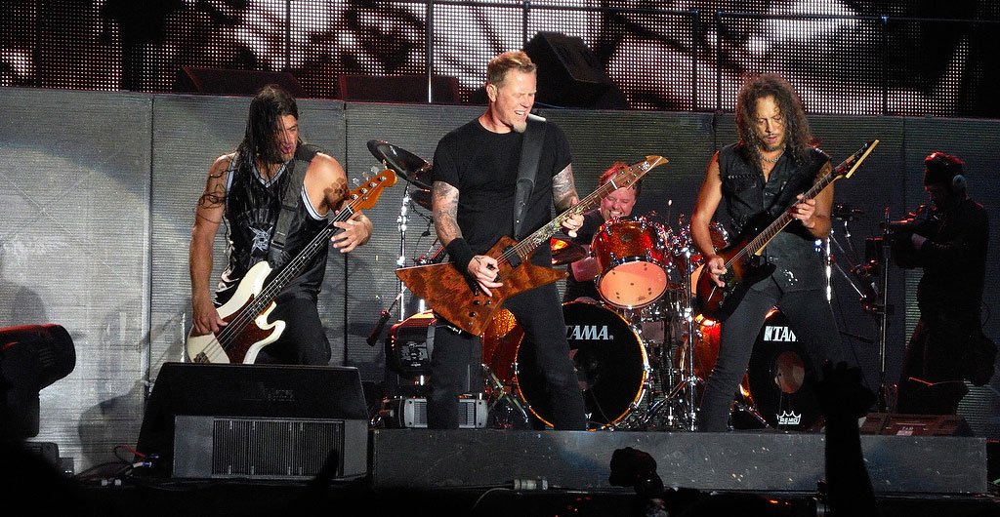
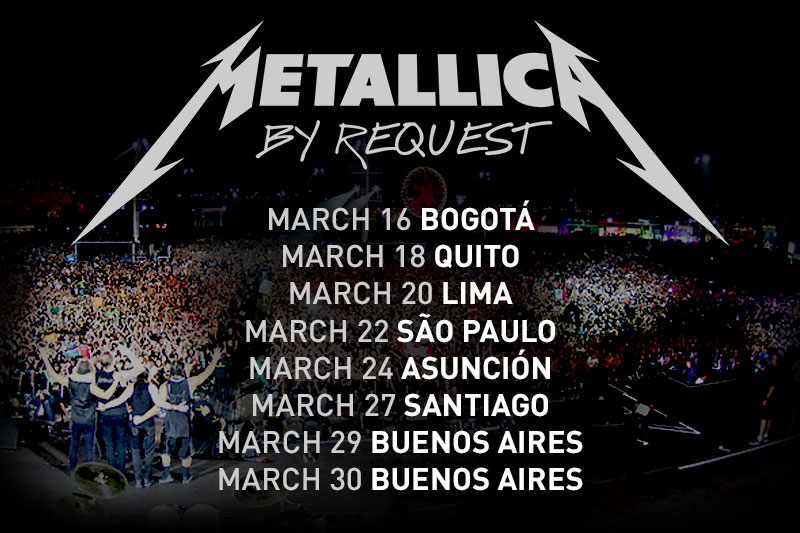
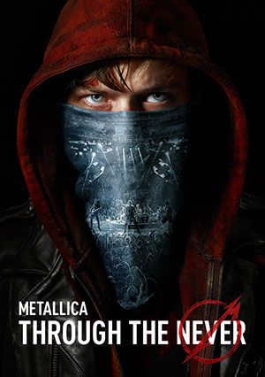

Latest News
MusiCares MAP Fund Honors Ozzy Osbourne
March 17, 2014
Metallica will be a part of the tenth annual MusiCares MAP Fund benefit concert as Ozzy Osbourne is presented with the Stevie Ray Vaughan Award on Monday, May 12 in Los Angeles.
The MusiCares MAP Fund allows access to addiction recovery treatment and sober living resources for members of the music community as well as offering support groups for working and touring members. James Hetfield was the recipient of this award in 2006 and Metallica will continue to support the amazing work that the MAP Fund does. Also joining Metallica in honoring Ozzy that night will be Keb’ Mo’ and a special performance by Ozzy and his touring band including Slash on guitar. Joe Walsh will be there to present Ozzy with his award and Jeff Greenberg, owner/CEO of the Village studios, will be receiving the From The Heart Award from Craig Ferguson.

By Request Tour... Just Around The Corner
March 13, 2014
Metallica are currently hunkered down at HQ writing a new song and putting the finishing touches on the first "By Request" tour that kicks off in Bogota, Colombia on this Sunday, March 16. A huge thanks to all of you who voted to choose the set lists for each of the eight shows in South America this month. The polls may be closed for voting on the South American shows, however, we’re not done yet!! If you’re heading to any of those upcoming shows, keep your eyes peeled at the venue for info about how you can make one more choice... during the show!!
Through The Never Movie Vest Gone Missing
December 23, 2013
Luggage at San Francisco Airport containing the vest worn by James Hetfield during Metallica Through The Never movie has gone missing. This piece of movie memorabilia is still unaccounted for and any help finding this piece of heavy metal history will come with a no questions asked reward and gratitude from the band if returned.

Metallica Through The Never Coming on DVD
November 21, 2013
If you didn't get a chance to get to the theater to see Through the Never or want to re-live it a few more times, soon you will be able to watch it in the comfort of your own home. We're super excited to hit you with the home version details as the film will be released on DVD, Blu-Ray, 3D Blu-Ray, digitally and V.O.D. (Video On Demand) on January 28, 2014 through our very own label, Blackened Recordings.
The DVD, Blu-Ray and 3D Blu-Ray will include extensive behind-the-scenes footage from the making of the film including an 80+ minute Making of Metallica Through the Never documentary put together by our good friend Adam Dubin (A Year and a Half in the Life of Metallica) and including two never before seen chapters.
A special limited-edition package will be available with extra goodies for Metallica die-hard fans and the Met Club family can also expect to get a first crack at grabbing a limited-edition set including a piece of an actual stage prop used in the film as well as a lithograph print autographed by the Metallica.